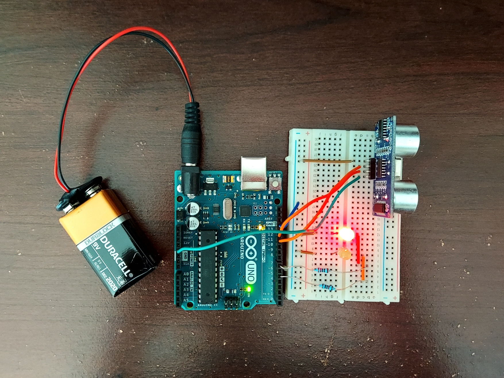
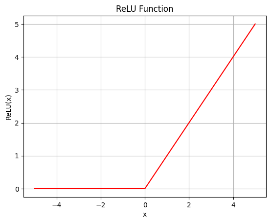

|
Kabilan Vaikunthan I'm a rising second-year at UC Berkeley studying Applied Mathematics and Statistics, interested in mathematical finance, computer vision, and robotics. At Berkeley, I am the software co-lead of the Underwater Robotics club. Currently, we're working on developing our computer vision models and task planning code for Robosub 2025. In my free time, I enjoy cooking, playing poker, and solving the NYT mini crossword. |
ProjectsNames in last name alphabetical order. |
|
|
Algorithmic Trader in Python
Kabilan Vaikunthan March 2025 github Analyzed metrics like log returns and maximum drawdowns to balance profits and risk within a basket of stocks. Implemented strategies like mean reversion and EMA crossover through the Alpaca API. Developed custom classes to backtest strategies and execute within broker. |
|
|
Neural Network from Scratch
Kabilan Vaikunthan February 2025 github Developed a neural network without using machine learning packages to classify the MNIST dataset. Calculated chain rule derivatives by hand for softmax, ReLU, and categorical cross-entropy functions. |

|
Syllabus Scanner
Lucas Chin, Zhen Liu, Sophia Ray, Kabilan Vaikunthan SBHacks, January 2025 github / devpost Parses uploaded syllabus and displays key information and dates to user. Developed an ETL pipeline to upload dates to Google Calendar using Aryn DocParse and Claude 3.5. |

|
Locked.ai
Russell Kwok, Clinton Nguyen, Kesavan Ramakrishnan, Kabilan Vaikunthan CalHacks, October 2024 github / devpost Tracks user focus through laptop webcam, alerting user with phone vibrations during distracted periods. Utilized Google Mediapipe and a least-squares regression model to map gaze onto screen. |

|
Greyfin
Pranesh Kumar, Clinton Nguyen, Eshan Ravikanthi, Kabilan Vaikunthan MateoHacks, April 2024 github Matches seniors with their ideal caretaker by utilizing word embeddings to find best match of hobbies, interests, and preferences. Utilized NLTK to create a chatbot that would converse with seniors to extract said information. |
|

|
Arduino Car Parking Assistant
Kabilan Vaikunthan July 2023 github / project design / case design Utilizes an ultrasound sensor to detect distance from vehicle to wall of garage. Red and green LEDs indicate to the driver when they are at the perfect distance from the wall, allowing them to close garage door safely. I did this fun project to help my parents park their car. |
WritingWhenever I encounter a difficult topic, I like to write about it to help myself understand it better and help others along the way. |
|

|
Why is ReLU nonlinear?
Kabilan Vaikunthan March 2025 github We explore why exactly this seemingly linear function is in fact nonlinear, and how it manages to outperform other activation functions. |
|
Website design from Jon Barron. |